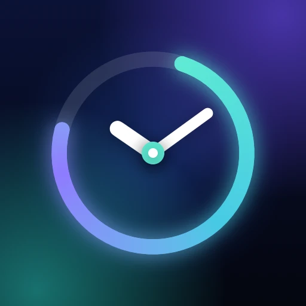
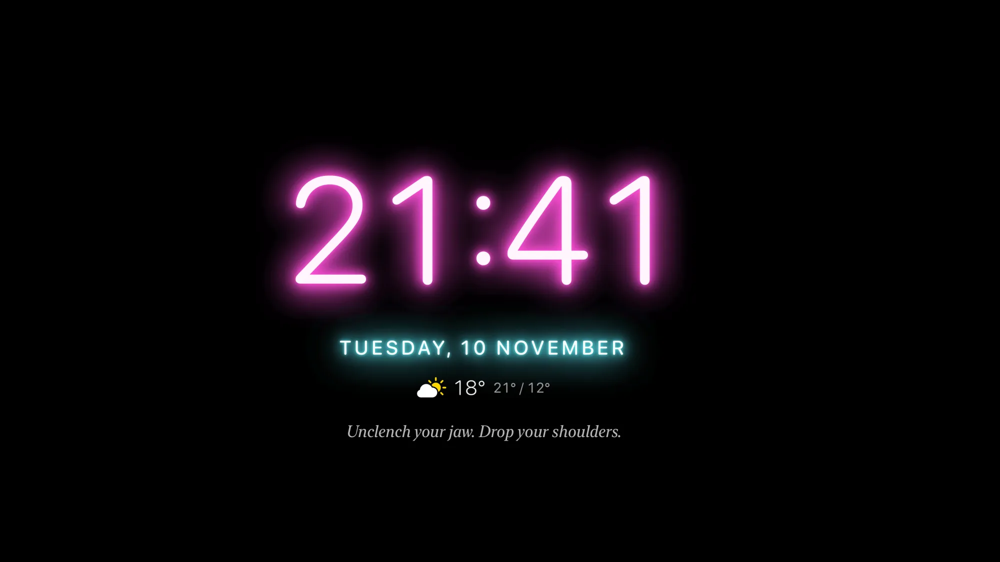
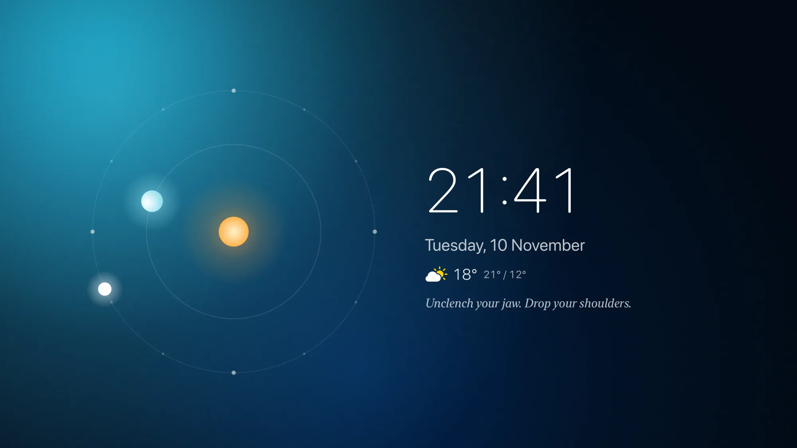
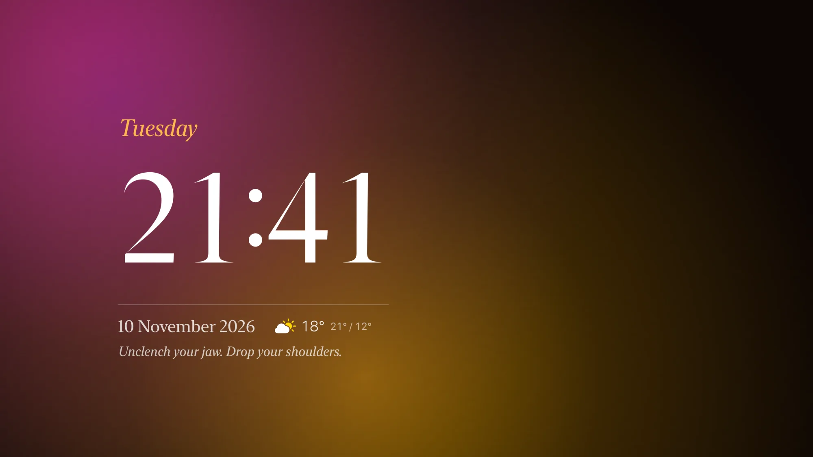
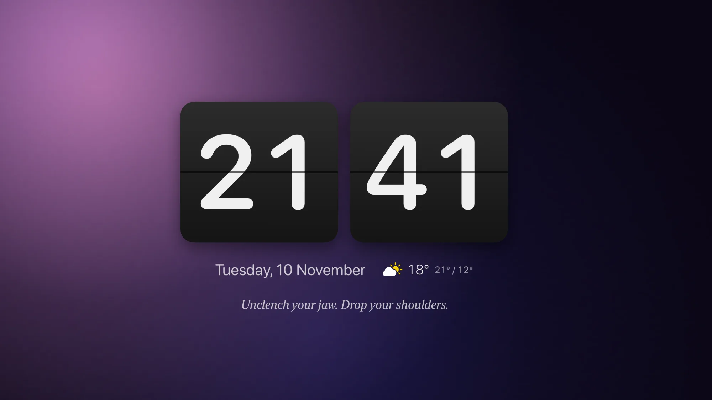
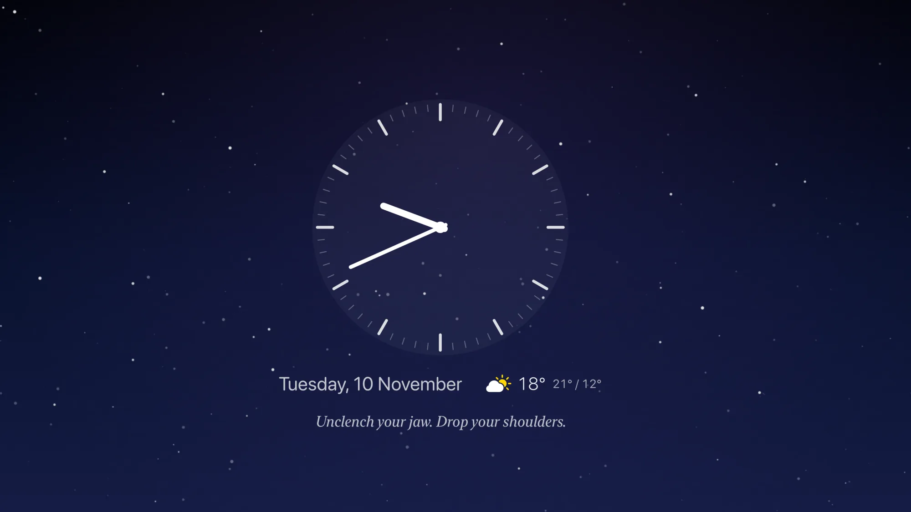
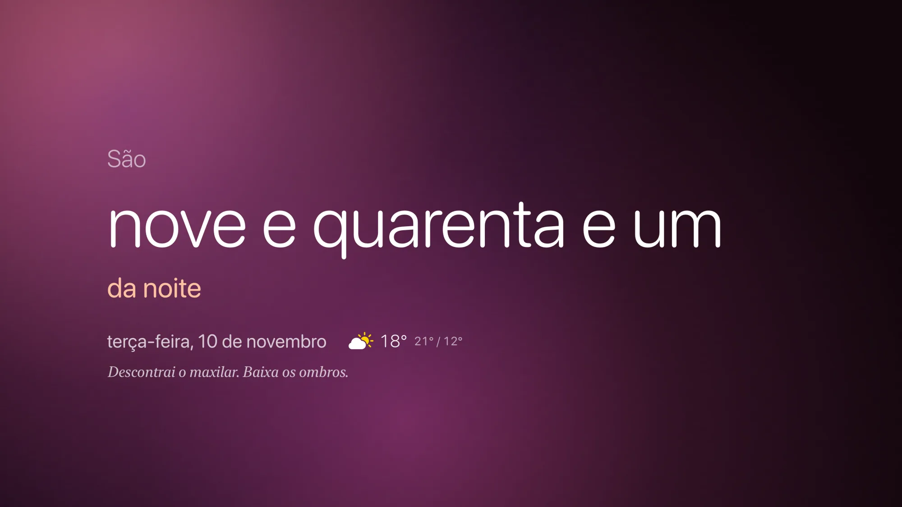
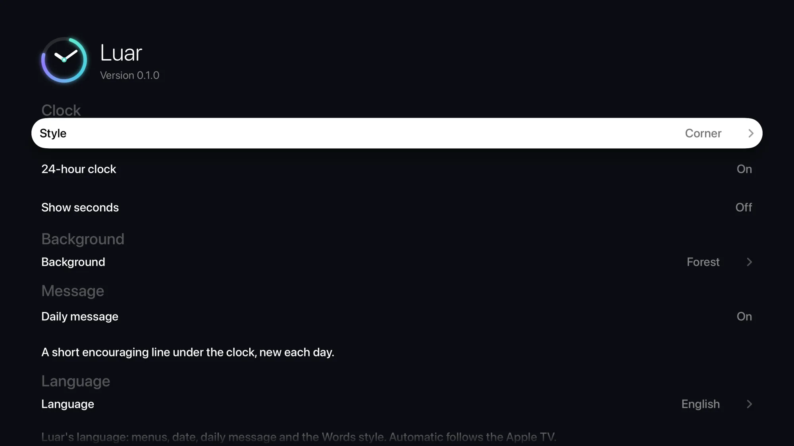

~/jfpf / apps / luar

Apple TVLuar
A calm clock for your Apple TV. Eleven clock styles over slow, glowing backgrounds, with the weather and a short message for each day. Luar is Portuguese for moonlight.
Something good to look at when nothing’s playing
Made for the remote: swipe to change the clock, press Play/Pause for a new background, click for settings.
-
Eleven clock styles
Moon, with tonight’s phase, Orbit, Neon, Classic, Flip, Analog, Ring and Stacked, plus Digital, Words and Corner, which tucks the time into a corner and leaves the background the room.
-
Slow, glowing backgrounds
Ten of them, from aurora and ocean glows to a starry night sky. Day Cycle follows the light of the day, from dawn to night.
-
A message for each day
365 short, encouraging lines written for Luar: a new one every day, a full year before one comes back.
-
The weather at a glance
The temperature now and today’s high and low where your Apple TV is, from Apple Weather. Part of Luar Premium.
-
On your Home screen
Put Luar in the top row and the banner above it shows today’s date, weather and message, and opens straight into a clock style.
-
Gentle at night
Dims itself in the evening, and lets your Apple TV sleep in the hours you choose. The rest of the time it stays on screen.
-
Kind to your screen
The clock drifts a few pixels over time so it never burns into OLED or plasma screens, and there’s a pure black background for OLED.
-
English and Portuguese
Luar follows your Apple TV’s language, or choose one in Settings: menus, date, message and the Words style all switch.
-
Free to start, Premium once
Digital, Words and Corner, with three backgrounds, are free. Luar Premium unlocks all eleven styles, all ten backgrounds and the weather for a single €2.99. No subscription.
- Apple TV 4K
- Apple TV HD
- tvOS 17+
A few of the styles







Questions
How do I use it with the remote?
Swipe left or right to change the clock style, press Play/Pause for the next background, and click the middle of the remote for settings. Back takes you to the Home screen.
Deslize para a esquerda ou direita para mudar o estilo do relógio, prima Reproduzir/Pausa para o fundo seguinte e clique no centro do comando para as definições. Voltar leva-o ao ecrã principal.
Will Luar keep my TV on all night?
Only if you want it to. Luar keeps your Apple TV awake while it’s open, except in the night hours set in Settings › Sleep (midnight to 6 am at first), when the Apple TV can sleep as usual. Turn that off to keep Luar on all night. Some TVs also switch themselves off after a few hours without the remote; that’s in your TV’s own power-saving settings.
Só se quiser. O Luar mantém a Apple TV acordada enquanto está aberto, exceto nas horas da noite definidas em Definições › Repouso (da meia-noite às 6 da manhã, de início), em que a Apple TV pode entrar em repouso como de costume. Desligue essa opção para manter o Luar a noite toda. Alguns televisores também se desligam sozinhos após algumas horas sem usar o comando; isso está nas definições de poupança de energia do próprio televisor.
Why does Apple’s screensaver appear at night?
In your sleep hours Luar steps aside so the Apple TV can sleep, and tvOS shows its screensaver first. To skip it, on your Apple TV go to Settings › General › Screen Saver › Start After and choose Never: Luar then stays until the Apple TV sleeps.
Nas horas de repouso, o Luar sai da frente para a Apple TV poder adormecer, e o tvOS mostra primeiro a proteção de ecrã. Para a evitar, nas Definições da Apple TV escolha que a proteção de ecrã nunca comece: o Luar fica no ecrã até a Apple TV adormecer.
How do I get Luar on the Home screen banner?
Move Luar into the top row: highlight its icon, hold the middle of the remote until it wiggles, move it up and click to drop it. The banner then shows today’s date, weather and message.
Mova o Luar para a fila de cima: selecione o ícone, mantenha o centro do comando premido até o ícone abanar, mova-o para cima e clique para o largar. A faixa passa a mostrar a data, a meteorologia e a mensagem de hoje.
Why does Luar ask for my location?
Only to show the weather where your Apple TV is, which is part of Luar Premium. Your approximate location is used on the Apple TV to ask Apple Weather for the forecast; it’s never sent to us. Without Premium, or with the weather off in Settings, Luar doesn’t ask. See the privacy policy.
Só para mostrar a meteorologia onde está a sua Apple TV, que faz parte do Luar Premium. A localização aproximada é usada na Apple TV para pedir a previsão à Apple Meteorologia; nunca nos é enviada. Sem o Premium, ou com a meteorologia desligada nas Definições, o Luar não a pede. Consulte a política de privacidade.
I bought Premium. How do I get it on another Apple TV?
Premium belongs to your Apple Account, so you only pay once. On the other Apple TV, signed in with the same Apple Account, open Luar’s Settings › Premium › Restore purchase.
O Premium fica associado à sua conta Apple, por isso só paga uma vez. Na outra Apple TV, com a mesma conta Apple, abra as Definições do Luar › Premium › Restaurar compra.
Which Apple TV do I need?
Any Apple TV 4K or Apple TV HD with tvOS 17 or later. Luar is made to stay smooth even on the Apple TV HD.
Qualquer Apple TV 4K ou Apple TV HD com tvOS 17 ou posterior. O Luar foi feito para correr de forma fluida mesmo na Apple TV HD.
How do I get help?
Email support@jfpfsolutions.com. We usually reply within one business day.
Envie um email para support@jfpfsolutions.com. Normalmente respondemos num dia útil.